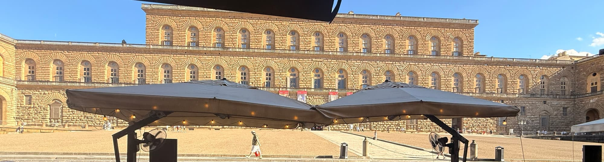
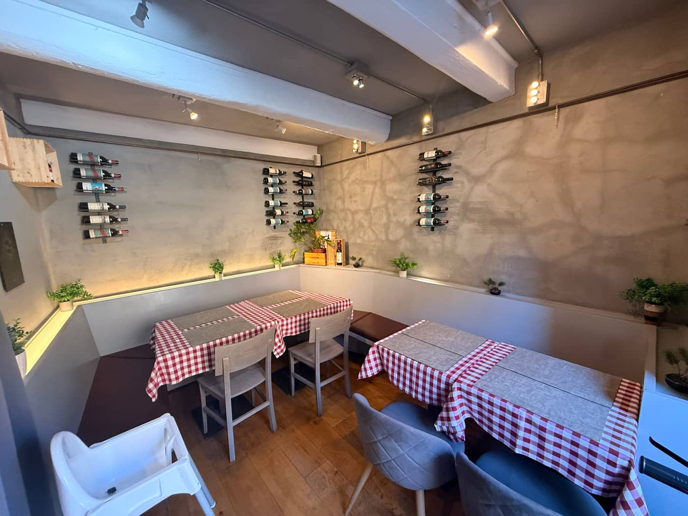
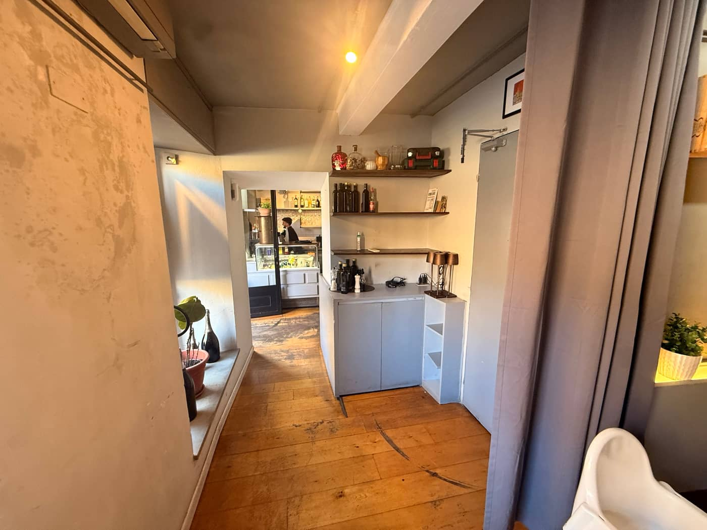

Firenze · Di fronte a Palazzo Pitti
OsteriaLa Galleria

Osteria La Galleria
Cucina toscana · Chianina IGP · Tartufo fresco · Pinsa · Buchetta del vino
Dieci sale. Una cucina.
Un menu da visitare come una galleria: dieci sale, ognuna col suo colore, ogni piatto con la sua targhetta. Scegli la lingua, spegni la luce sui piatti che non fanno per te, e pesa la tua fiorentina prima ancora di sederti.
Happy hour · Spritz e Hugo · 7 €
Prima di entrare
La buchetta del vino
Sulla facciata c'è una buchetta: la finestrella da cui, dal Cinquecento, i fiorentini si facevano passare un bicchiere di vino senza entrare. La nostra è ancora aperta. Un bicchiere in piedi, davanti a Palazzo Pitti, e poi si comincia la visita.
Vino al bicchiere da 7 € · Happy hour: Spritz e Hugo 7 €
La cantina, sala XI piatti che non fanno per te restano appesi, ma con la luce spenta. Per gli allergeni chiedi sempre in sala: la cucina è una sola.
Fine della visita
Vieni a trovarci

